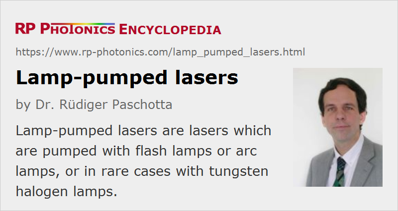

Lamp-pumped Lasers
Definition: lasers which are pumped with flash lamps or arc lamps, or in rare cases with tungsten halogen lamps
More general terms: lasers
German: lampengepumpte Laser
How to cite the article; suggest additional literature
Author: Dr. Rüdiger Paschotta
Doped insulator solid-state lasers are essentially always optically pumped, and the pump source is usually either a laser diode or some kind of gas discharge lamp; in rare cases, one uses tungsten-halogen lamps, which are not gas discharge lamps but rather similar to ordinary incandescent lamps.
Types of Lamps
Gas discharge lamps used for laser pumping are grouped in two categories: arc lamps and flash lamps. Arc lamps are optimized for continuous-wave operation, whereas flash lamps (flashlamps) produce pump pulses for either free-running or Q-switched lasers. Note that the term flash lamp is sometimes wrongly used instead of arc lamp, and arc lamps are not necessarily based on an arc discharge, but possibly use a glow discharge.
Both types of lamps essentially consist of a glass tube, filled with some gas (e.g. krypton or xenon at a few atmospheres) and having a metallic electrode at each end.
Flash lamps are often supplied with electrical energy from a capacitor. The energy is transmitted through some electronic components (a pulse forming network) which influence the duration of the pump pulse.

For pumping solid-state lasers, one usually uses linear lamps with an electrode separation between 5 and 15 cm. (Short-arc lamps with a much smaller electrode separation of normally less than 1 mm, sometimes also with carbon electrodes, are used for other purposes.) The shape of the lamp's electrodes depends on the mode of operation: flash lamps have rounded cathodes, whereas pointed cathodes are better for arc lamps, which are operated with much lower currents. The applied current density can also have a substantial impact on the generated optical spectrum; continuously operated arc lamps often exhibit a pronounced line spectrum, whereas flash lamps, getting into the arc regime, have a more smooth spectral shape.
Pump Chamber

The laser crystal of a lamp-pumped laser is usually a relatively long side-pumped rod, adapted to the length of the lamp. In many cases, laser rod and lamp are placed within an elliptical pump chamber with reflective walls, so that a larger percentage of the generated pump light can be absorbed in the laser rod. Excess heat is removed by cooling water, and an additional filter glass may be used to protect the laser rod from ultraviolet light emitted by the lamp.
More details are discussed in the article on pump chambers.
Another type of solid-state laser which is suitable for lamp pumping is the face-pumped slab laser. Here, an array of lamps pumps a slab through its large face, possibly from both sides. The pump light may be injected through a layer of cooling water.
In any case, the low brightness (more precisely: low radiance) of lamps restricts the choice of geometry. For example, end pumping requires a higher radiance and is therefore possible only with laser diodes (or sometimes other kinds of lasers).
Gain Media for Lamp-pumped Lasers
Concerning the gain medium, the most common type of lamp-pumped laser is the Nd:YAG laser. Krypton-filled lamps are mostly used in this case, because the krypton emission is strong in the region between 750 nm and 900 nm, where Nd:YAG has strong absorption lines. Other neodymium-doped gain media such as Nd:YLF and Nd:YVO4 are also suitable. These have relatively broad absorption bands and are four-level laser media, so that they can be used with moderate pump intensities and utilize a significant part of the lamp spectrum. Less common lamp-pumped lasers are based on alexandrite (with xenon lamps), Ti:sapphire, Cr:LiSAF, or laser dyes.
Generally, relatively large laser crystals are required for lamp-pumped lasers. This makes it difficult to apply certain crystal types, which are difficult to grow with high quality in large sizes. Ceramic gain media, which can be made very large, are suitable.
Attractions and Limitations of Lamp Pumping
The first laser, the ruby laser built by Maiman [1], was pumped with a flash lamp, and even though diode-pumped lasers have become very common due to a number of advantages, lamp-pumped lasers will continue to be used for a long time. Their main advantages are:
- Very high pump powers (particularly peak powers) can be generated, and very high pulse energies (e.g. hundreds of joules) are possible.
- The price per watt of generated pump power is much lower for lamps than with laser diodes.
- Lamps are fairly robust, e.g. immune to voltage or current spikes.
Disadvantages are:
- The lifetime of laser lamps is generally quite limited –- normally some hundred or up to a few thousand hours. However, the achieved lamp lifetime strongly depends on the operation parameters.
- The wall-plug efficiency of the laser is low – typically at most a few percent. Consequences of that are not only higher electricity consumption, but also a higher heat load, making necessary a more powerful cooling system, and strong thermal lensing, making it more difficult to achieve a good beam quality.
- Electric ]power supplies,lamp %] for lamp-pumped lasers involve high voltages, which raise additional safety issues.
- The low radiance (compared with that achievable with diode lasers) and the broad emission wavelength range exclude many solid-state gain media. For example, quasi-three-level lasers can hardly be pumped with lamps.
- Lamps are relatively noisy pump sources, leading to higher levels of laser noise. For example, Q-switched lamp-pumped lasers often exhibit relatively strong pulse-to-pulse fluctuations.
- Due to the highly complex processes in a lamp-pumped laser, it is generally not realistic to develop a comprehensive physical model which could quantitatively predict the laser performance. In contrast, many diode-pumped lasers have a much more predictable performance; in simple cases, even a couple of rather simple equations may be sufficient.
However, device lifetime, power efficiency, cooling and thermal lensing are not really important issues e.g. when a flash lamp is operated with low pulse repetition rate and low average power, as required e.g. in engraving and marking systems. In such situations, the lamp-specific advantages clearly dominate. On the other hand, high-power continuous-wave lamp-pumped lasers as well as pulsed lasers operating at high pulse repetition rates have largely been replaced with diode-pumped devices such as more compact rod lasers, thin-disk lasers and fiber lasers.
Suppliers
The RP Photonics Buyer's Guide contains 21 suppliers for lamp-pumped lasers. Among them:
Questions and Comments from Users
Here you can submit questions and comments. As far as they get accepted by the author, they will appear above this paragraph together with the author’s answer. The author will decide on acceptance based on certain criteria. Essentially, the issue must be of sufficiently broad interest.
Please do not enter personal data here; we would otherwise delete it soon. (See also our privacy declaration.) If you wish to receive personal feedback or consultancy from the author, please contact him e.g. via e-mail.
By submitting the information, you give your consent to the potential publication of your inputs on our website according to our rules. (If you later retract your consent, we will delete those inputs.) As your inputs are first reviewed by the author, they may be published with some delay.
Bibliography
| [1] | T. H. Maiman, “Stimulated optical radiation in ruby”, Nature 187, 493 (1960) (first experimental demonstration of a laser), doi:10.1038/187493a0 |
| [2] | T. Reichert et al., “Continuous-wave laser pump light sources: new concepts”, Appl. Opt. 32 (33), 6607 (1993), doi:10.1364/AO.32.006607 |
| [3] | W. Koechner, Solid-State Laser Engineering, 6th edn., Springer, Berlin (2006) |
See also: solid-state lasers, arc lamps, flash lamps, xenon lamps, pump chambers, diode-pumped lasers, all-solid-state lasers, high-power lasers, YAG lasers, laser safety
and other articles in the category lasers
|  |
If you like this page, please share the link with your friends and colleagues, e.g. via social media:
These sharing buttons are implemented in a privacy-friendly way!